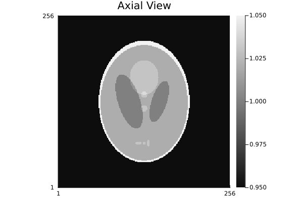

Shepp-Logan Phantom
The Shepp-Logan phantom is the classic test phantom in medical imaging. First introduced by Shepp and Logan in 1974, it represents a simplified model of the human head using overlapping ellipses, making it ideal for testing image reconstruction algorithms and understanding imaging physics.
History and Design Philosophy
The original 2D phantom (Shepp & Logan, 1974) was designed as a synthetic test image for CT reconstruction, composed of 10 ellipses with different attenuation coefficients. A more detailed 3D version was proposed in 1980 by the same researchers, but it didn't become widely used. In 1988, Kak and Slaney popularized its use in the context of filtered backprojection algorithms, and defined a 3D version using 10 ellipsoids. It became the standard test case because:
- Simplicity: Easy to generate and understand
- Reproducibility: Well-defined mathematical structure enables precise comparisons
The MRI variant (Toft, 1996) adapted intensity values for nuclear magnetic resonance instead of X-ray attenuation, scaling to realistic MRI signal ranges. Also in 1996, Caroline Jacobson suggested adding two extra ellipsoids to the 3D version to better match the original 2D design.
GeometricMedicalPhantoms.jl implements Jacobson's version, but it differs from it by a shift in z-axis by 0.25. This adjustment makes the connection between the original 2D phantom and the 3D volume more intuitive by centering the axial slice that matches the 2D phantom.
References
[1] L. A. Shepp and B. F. Logan, “The Fourier reconstruction of a head section,” IEEE Trans. Nucl. Sci., 1974. [2] L. A. Shepp, “Computerized tomography and nuclear magnetic resonance,” 1980. [3] A. C. Kak and M. Slaney, Principles of Computerized Tomographic Imaging. IEEE Press, 1988. [4] P. A. Toft, “The Radon Transform - Theory and Implementation,” PhD Thesis, 1996. [5] C. Jacobson, “Fourier Methods in 3D-Reconstruction from Cone-Beam Data,” PhD Thesis, Department of Electrical Engineering, Linköping University, Linköping, Sweden, 1996.
Comparison with ImagePhantoms.jl
Both the original 2D and Jacobson's version of the 3D Shepp-Logan phantom are also available in the ImagePhantoms.jl package. For higher precision, one might prefer ImagePhantoms.jl, which samples the analytical definition in Fourier or Randon space directly. GeometricMedicalPhantoms.jl, however, provides more flexibility over geometry and intensity customization, and have been optimized for fast voxel-based rendering.
Basic Usage
2D Slices
Generate a 2D Shepp-Logan phantom at any orientation:
# Create axial (horizontal) slice
phantom_axial = create_shepp_logan_phantom(256, 256, :axial)
jim(phantom_axial; title="Axial View", clim=(0.95, 1.05), yflip=false)
# Create coronal (front-to-back) slice
phantom_coronal = create_shepp_logan_phantom(256, 256, :coronal)
jim(phantom_coronal; title="Coronal View", clim=(0.95, 1.05), yflip=false)
# Create sagittal (left-right) slice
phantom_sagittal = create_shepp_logan_phantom(256, 256, :sagittal)
jim(phantom_sagittal; title="Sagittal View", clim=(0.95, 1.05), yflip=false)
3D Volume
Generate a full 3D phantom:
phantom_3d = create_shepp_logan_phantom(128, 128, 128)
println("Phantom shape: $(size(phantom_3d))")
println("Min value: $(minimum(phantom_3d))")
println("Max value: $(maximum(phantom_3d))")Phantom shape: (128, 128, 128)
Min value: 0.0
Max value: 2.0Create spatial slicing GIF showing all slices through the volume:
using FileIO, ImageIO, ImageMagick
# Create axial slices GIF (loop through z-axis)
nx, ny, nz = size(phantom_3d)
frames_axial = zeros(UInt8, nx, ny, nz)
for i in 1:nz
slice = abs.(phantom_3d[:, :, i])
frames_axial[:, :, i] = map(x -> UInt8(round((clamp(x, 0.95, 1.05) - 0.95) / 0.1 * 255)), slice)
end
save("shepp_logan_axial_slices.gif", frames_axial, fps=10)
# Create coronal slices GIF (loop through y-axis)
frames_coronal = zeros(UInt8, nx, nz, ny)
for i in 1:ny
slice = abs.(phantom_3d[:, i, :])
frames_coronal[:, :, i] = map(x -> UInt8(round((clamp(x, 0.95, 1.05) - 0.95) / 0.1 * 255)), slice)
end
save("shepp_logan_coronal_slices.gif", frames_coronal, fps=10)
# Create sagittal slices GIF (loop through x-axis)
frames_sagittal = zeros(UInt8, ny, nz, nx)
for i in 1:nx
slice = abs.(phantom_3d[i, :, :])
frames_sagittal[:, :, i] = map(x -> UInt8(round((clamp(x, 0.95, 1.05) - 0.95) / 0.1 * 255)), slice)
end
save("shepp_logan_sagittal_slices.gif", frames_sagittal, fps=10)
Intensity Variants
The package provides different intensity scaling options:
CT Intensities (Original Shepp-Logan)
phantom_ct = create_shepp_logan_phantom(256, 256, :axial; ti=CTSheppLoganIntensities())
jim(phantom_ct; title="CT Shepp-Logan", clim=(0.95, 1.05), yflip=false)
This uses the original Shepp & Logan (1974) attenuation coefficients adapted for CT imaging.
MRI Intensities (Toft 1996)
phantom_mri = create_shepp_logan_phantom(256, 256, :axial; ti=MRISheppLoganIntensities())
jim(phantom_mri; title="MRI Shepp-Logan", yflip=false)
The MRI version from Toft's PhD thesis (1996) provides intensity values suited for nuclear magnetic resonance imaging.
Custom Intensities
You can create custom intensity values:
using GeometricMedicalPhantoms: SheppLoganIntensities
# Create custom intensities with your own values
custom_intensities = SheppLoganIntensities(
skull=1.5,
brain=0.5,
right_big=-0.1,
left_big=-0.1,
top=0.2,
middle_high=0.2,
bottom_left=0.2,
middle_low=0.2,
bottom_center=0.2,
bottom_right=0.2,
extra_1=0.3,
extra_2=-0.1
)
phantom_custom = create_shepp_logan_phantom(256, 256, :axial; ti=custom_intensities)
jim(phantom_custom; title="Custom Intensities", yflip=false)
Tissue Masking
Extract masks for specific anatomical regions:
# Create mask of the skull
skull_mask = create_shepp_logan_phantom(256, 256, :axial; ti=SheppLoganMask(skull=true))
jim(skull_mask; title="Skull Mask", yflip=false)
# Create mask of the brain
brain_mask = create_shepp_logan_phantom(256, 256, :axial; ti=SheppLoganMask(brain=true))
jim(brain_mask; title="Brain Mask", yflip=false)
# Create combined mask of brain structures
structures_mask = create_shepp_logan_phantom(256, 256, :axial;
ti=SheppLoganMask(brain=true, right_big=true, left_big=true))
jim(structures_mask; title="Brain Structures", yflip=false)
Advanced Parameters
Resolution and Field of View
Control the resolution and spatial extent:
# Low resolution
phantom_low = create_shepp_logan_phantom(64, 64, :axial)
# High resolution
phantom_high = create_shepp_logan_phantom(512, 512, :axial)
p1 = jim(phantom_low; title="Low Res (64×64)", clim=(0.95, 1.05), yflip=false)
p2 = jim(phantom_high; title="High Res (512×512)", clim=(0.95, 1.05), yflip=false)
plot(p1, p2, layout=(1,2), size=(1000,400))
Custom Field of View
# Smaller FOV (zoomed in)
phantom_small_fov = create_shepp_logan_phantom(256, 256, :axial; fovs=(10.0, 10.0))
# Larger FOV (zoomed out)
phantom_large_fov = create_shepp_logan_phantom(256, 256, :axial; fovs=(30.0, 30.0))
p1 = jim(phantom_small_fov; title="Small FOV (10cm)", clim=(0.95, 1.05), yflip=false)
p2 = jim(phantom_large_fov; title="Large FOV (30cm)", clim=(0.95, 1.05), yflip=false)
plot(p1, p2, layout=(1,2), size=(1000,400))
Data Type
Control the output data type and create specific masks:
phantom_f32 = create_shepp_logan_phantom(256, 256, :axial; eltype=Float32)
phantom_f64 = create_shepp_logan_phantom(256, 256, :axial; eltype=Float64)
# Create a mask where only skull and top ellipsoids are selected
phantom_mask = create_shepp_logan_phantom(256, 256, :axial; ti=SheppLoganMask(skull=true, top=true))
println("Float32: $(typeof(phantom_f32))")
println("Float64: $(typeof(phantom_f64))")
println("Mask (Bool): $(typeof(phantom_mask))")
jim(phantom_mask; title="Skull + Top Mask", yflip=false)Float32: Matrix{Float32}
Float64: Matrix{Float64}
Mask (Bool): BitMatrix